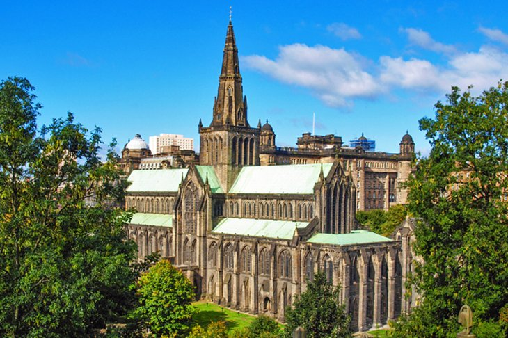
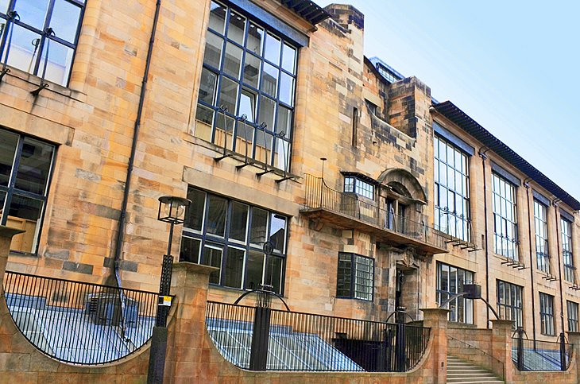
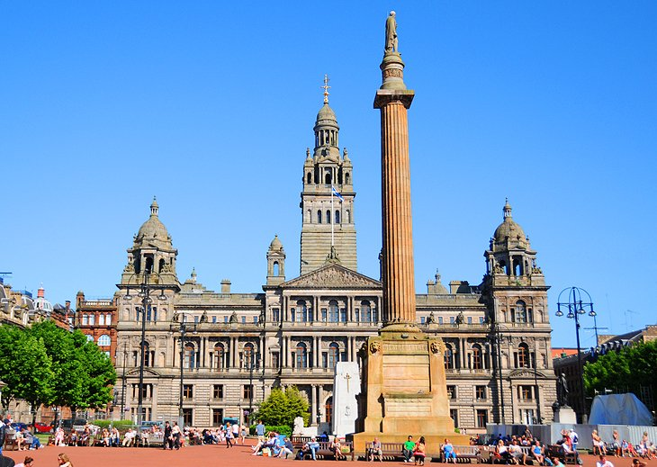
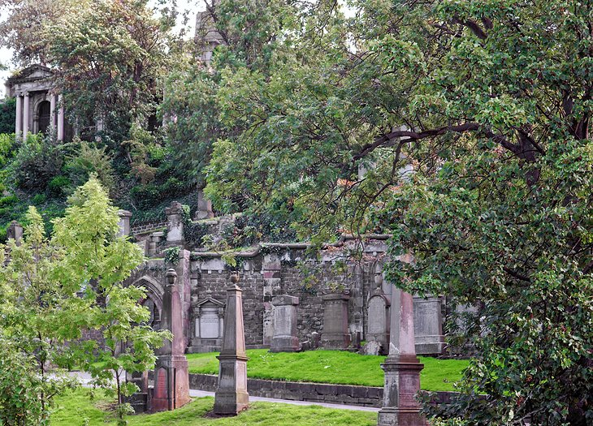
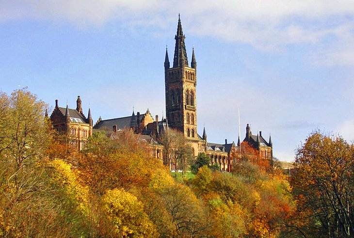
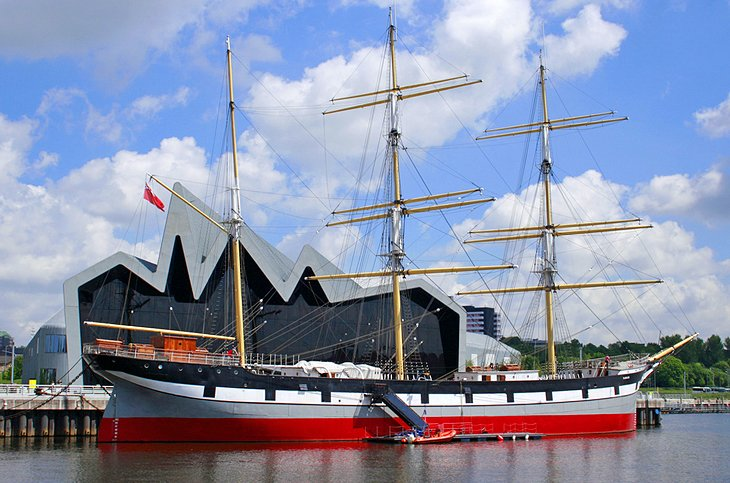
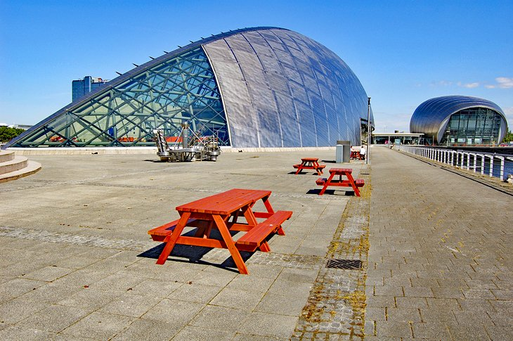
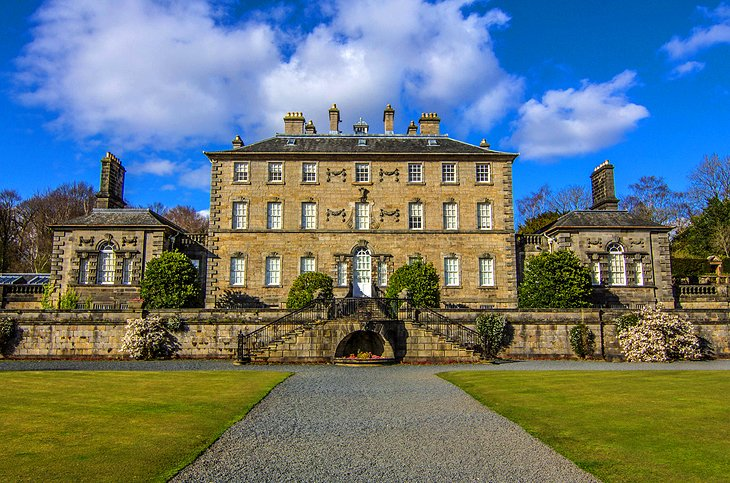
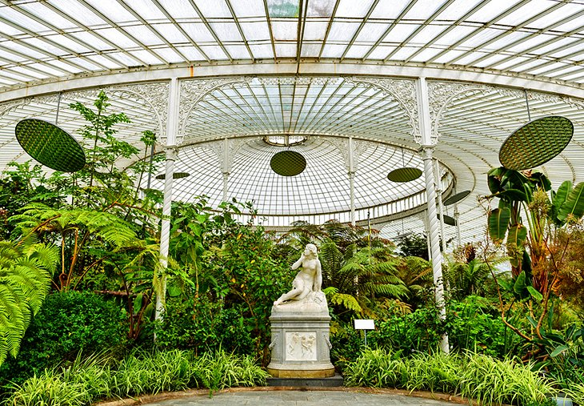

Kelvingrove Art Gallery and Museum
Glasgow Cathedral

Glasgow School of Art

George Square and the Merchant District

A Walk through the Necropolis

The University of Glasgow: The Hunterian Museum and Art Gallery

Riverside Museum and Tall Ship

Glasgow Science Centre

Pollok House and Pollok Country Park

Kibble Palace and Glasgow Botanic Gardens

The bustling entertainment and shopping mecca of Sauchiehall Street, now almost entirely given over to pedestrians, is more than 1.5 miles long and offers the largest range of shops in the city. Sauchiehall Street ends at Argyle Street in the city's West End, a trendy area of cafés, restaurants, high-end shops, posh hotels, and, perhaps most importantly, the wonderful Kelvingrove Art Gallery and Museum.
Opened in 1901, the museum has a fine collection of British and continental paintings, including such gems as Van Gogh's portrait of the Glaswegian art collector Alexander Reid, and Salvador Dali's Christ of Saint John of the Cross.
An exceptional series of galleries feature the Glasgow School of Art and its best-known figure, Charles Rennie Mackintosh, with complete furnished rooms, pottery, metalwork, furniture, and other works of art. Scottish archaeological finds include Bronze Age tools and jewelry from Arran, Kintyre, and Glenluce.
Other exhibits of interest include weapons and armor, such as helmets, crossbows, and swords from the 15th and 16th centuries, as well as Flemish tapestries, Glasgow-made jewelry, silverware, glassware, and pottery from various periods.
The city's most significant historic building is the 12th-century Glasgow Cathedral, also known as St. Mungo Cathedral or the High Kirk of Glasgow. Seen from both inside and out, it looks as if it dropped out of a giant mold: the lines are clear, and there's no superfluous ornamentation.
Projecting from the south transept is the Blacader Aisle, named after the first bishop of Glasgow. The grandest room in the cathedral, however, is the crypt, which houses the tomb of St. Mungo, founder of the bishopric, who was buried here in AD 603. Although a visit to the cathedral is regarded as one of the top free things to do in Glasgow, donations are always welcome. Guided tours are also available free of charge.
Next door is the St. Mungo Museum of Religious Life and Art, which examines the world religions, their rites, and how their doctrines deal with the issues of life and death. Exhibits include Egyptian mummies, Hindu statues, and a Zen Buddhist garden in the courtyard.
Mackintosh's Art Academy is essential viewing for lovers of fine architecture. Completed in 1909, this Art Nouveau building confirmed the reputation of 28-year-old designer Charles Mackintosh, not just as a master of the exterior-the grand west facade is dominated by three 65-foot-high oriel windows, and the smaller windows on the east front are reminiscent of Scottish castles-but also as a superb interior designer.
The most famous rooms include the Principal's Room, one of the first of Mackintosh's "White Rooms"; the Mackintosh Room, where meetings of the Academy of Art are held; and the unique Library and Gallery. Student-led tours explore Mackintosh's work and influence and include galleries of his furniture and other works.
At the heart of Glasgow's historic Victorian city center stands the flower-bedecked George Square with its 12 statues of famous people associated with the city, including Robbie Burns, Walter Scott, and Queen Victoria. The east end of the square is dominated by the Town Hall and its 230-foot tower completed in 1890, while the Merchants' House is the headquarters of Britain's oldest Chamber of Commerce, founded in 1605.
South of George Square, a group of mid-19th-century warehouses are part of the city's trendy Merchant City district that, along with The Italian Centre, offer unique cafés, restaurants, and designer boutiques. The area is particularly attractive in winter, when families and those here enjoying some Glasgow sightseeing are bedazzled with an impressive display of Christmas lights.
Neighboring Glasgow Cathedral is the Necropolis, a Victorian Gothic garden cemetery that covers 37 acres that has famously been described as a "city of the dead." It is filled with not only beautiful memorial stones-all told, some 3,500 of them-but also sculptures and buildings designed by Glasgow artists, including Charles Rennie Macintosh.
Intricately carved Celtic crosses mingle here with weeping angels in atmospheric surroundings of tree-shaded walks that open to views of the cathedral and city. A variety of informative walking tours are available, and recommended.
The University of Glasgow dates from 1451 and is the second-oldest school of higher education in Scotland. The university has employed many illustrious teachers over the centuries, including James Watt; Adam Smith; and the "father of antiseptic surgery," Joseph Lister. A permanent exhibition at the Visitor Centre in University Avenue goes into more detail about the important discoveries made by these and other scientists who taught here.
Another famous scientist with connections to the university was William Hunter, an 18th-century Glaswegian doctor who bequeathed his collection of anatomical parts, coins, and objets d'art to form the basis of the Hunterian Museum. The museum now includes collections from the departments of ethnography, zoology, geology, and archaeology, including many finds from Roman sites. Artwork on display includes works by Rubens, Rembrandt and Reynolds.
The gallery also houses the reassembled principal interiors from the Glasgow home of architect Charles Rennie Mackintosh and his artist-wife, Margaret Macdonald Mackintosh.
Glasgow's ultra-modern, award-winning Riverside Museum includes many of the exhibits from the city's former Transport Museum, including model ships, locomotives, trams, vintage cars, and horse-drawn carriages. The majority are Glasgow-built.
A superb reconstruction of a 1938 Glasgow street has been added to the displays, as well as exhibits on immigration and disasters, featuring the sinking of the Lusitania. The Tall Ship at Riverside is docked just outside, giving visitors the opportunity to explore the Glenlee, a Glasgow-built three-masted barque that has been carefully restored by the Clyde Maritime Trust. Interesting guided tours are available, sometimes with costumed guides.
Those interested in museums and antiquities should also plan on paying a visit to the Glasgow Museums Resource Centre. This fascinating facility is where many of the city's museums store their collections when they are not on display. Think of it a little like a visit to a Costco, but nothing's for sale. It's a large place, with its many storage rooms stacked high with everything from artworks and sculptures to armor and weaponry; in fact, more than 1.5 million artifacts are stored here, so chances are you'll see something of interest.
Guided tours are provided, along with interesting lectures and workshops, including programs aimed at younger travelers.
A must-visit sightseeing opportunity for families, the Glasgow Science Centre is a great way to spend time together. Located in the waterfront area near the Riverside Museum, this popular attraction is housed in a suitably striking titanium-clad building shaped like a ship's hull and offers no-end of hands-on fun and exploration.
Notable exhibits include human health, technology, and general scientific principles, along with a variety of laboratory-type stations where kids can attempt a few practical experiments based on their newly acquired knowledge.
Also worth checking out here are the planetarium, an Imax cinema, and a science theater, where regular lectures and talks are held. Although rarely open, ask about admission to the Glasgow Tower. Claimed to be the world's tallest freely-rotating tower, it's a worthwhile experience and offers great views over the surrounding area.
Close to four miles southwest of Glasgow's city center, the grounds of Pollok House cover an area of 355 acres. The home of the Maxwell family, this Edwardian mansion was built in 1752 by William Adam and his sons.
The majority of the expansive building is now open for visitors to explore, from the grand entrance hall to the extensive servants' quarters. Sir William Stirling Maxwell's collection of Spanish paintings by El Greco, Goya, Murillo, and Velázquez hangs on display, as well as several significant works by William Blake. Guided and self-guided tours are available.
The adventurous will want to try the unique "Escape the Past" game, a fully interactive exhibit that challenges players to solve puzzles and find their way back to present-day. The grounds of the estate include the Pollok Country Park, where you can admire the meticulously kept gardens or walk some of the trails that lead through woodlands and to the river side, and follow in the footsteps of characters from the hit TV show, Outlander. A highlight of a visit is the chance to enjoy a meal or snack in the Edwardian Kitchen café.
Built in 1873, Kibble Palace is one of the largest glasshouses in Britain and contains a collection of rare orchids; tree ferns from Australia and New Zealand; and plants from Africa, the Americas, and the Far East. It is located at Glasgow's Botanic Gardens, where you can explore more greenhouses and admire the Victorian sculptures located throughout the grounds. For an added treat, pay a visit to the gardens' tearoom, notable for its lovely patio.
Another beautiful park to visit is Bellahouston Park, site of the 1938 Empire Exhibition attended by more than 13 million visitors and still popular for its colorful flowerbeds. A star attraction here is the wonderfully named House for an Art Lover, built in 1996 to a design by Charles Mackintosh. This picturesque structure frequently hosts art exhibits and other events, while the park itself hosts frequent music concerts..